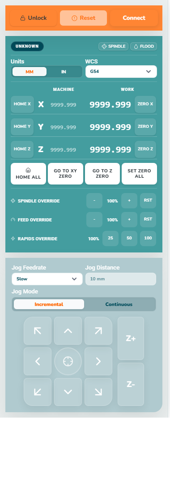
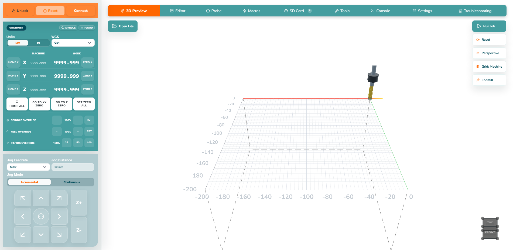
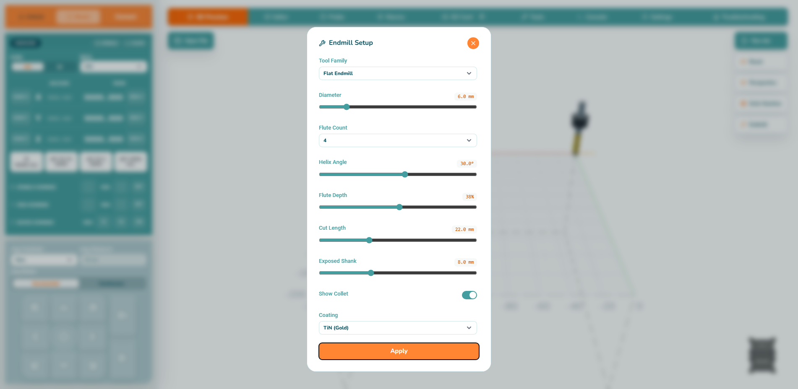

Units
MM/IN changes displayed and entered units. It does not resize the material or convert a file safely by itself.
Understand the state, coordinates and movement controls before touching a jog button.
MM/IN changes displayed and entered units. It does not resize the material or convert a file safely by itself.
G54–G59 select saved work coordinate systems. Use the one expected by the G-code.
Machine is the controller’s absolute position after homing; Work is relative to the job zero you set.
Homing finds repeatable reference switches. It does not set the material corner or top surface.
Set Zero defines the selected work origin at the current cutter location. Confirm the WCS first.
Incremental moves one selected step. Continuous moves while held. Start slowly and use tiny steps near the work.

Use the preview to find obviously misplaced or oversized paths. It cannot detect a loose clamp, wrong cutter, incorrect work zero or material that is not where the file expects it.

Open Endmill from the 3D Preview to configure the visual cutter and holder. This changes the preview representation only; it does not identify or change the physical cutter.

Feed, rapid and spindle overrides change live behaviour. Reset, Hold and emergency stop have different effects; read the controller state and message before pressing anything repeatedly. If movement differs from expectation, stop and recheck units, WCS, work zero and the file.